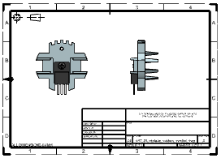
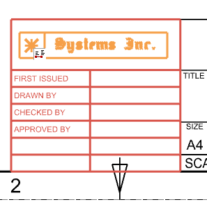
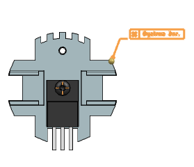
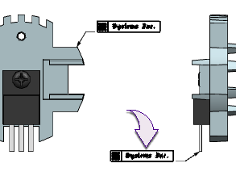

Create locked and unlocked instances of a custom symbol
If your company’s logo changes, you may need to update your drawings to use the new logo. This activity demonstrates how to change unlocked custom symbol instances, and lock other custom symbol instances so they are not updated.
-
Open drf7_85_replace_custom_symbol_dwg.

-
In the Reuse Library
 , expand the Custom Symbol Library node and select the Part Symbols folder.
, expand the Custom Symbol Library node and select the Part Symbols folder.
-
In the Member Select group, drag the logo_label custom symbol into the graphics window.
Tip
If you do not see the Member Select group in the Reuse Library, drag the split bar up to display additional groups.
-
In the Custom Symbol dialog box, click Reset
 to reset all the options to their default condition.
to reset all the options to their default condition.
-
In the Symbol Attributes group, in the Scale box, type 1.5.
-
In the Settings group, set the following:
-
Lock Update =

-
Annotation Preferences = Use Definition
-
Geometry Preferences = Use Definition
-
-
Position the symbol in the title block and click once to place it.
Tip
If necessary, press the ALT key while placing the symbol to suppress the associative alignment tools.

-
In the Symbol Attributes group, in the Scale box, type 1 and press Enter.
-
In the left view, highlight the upper right corner of the heat sink, click then drag the symbol away from the edge, and click to place it on the drawing sheet.

-
In the Settings group, clear the Lock Update
 check box.
check box.
-
Attach the second symbol to the electrical power transistor in the projected view as shown.

-
Close the Custom Symbol dialog box.